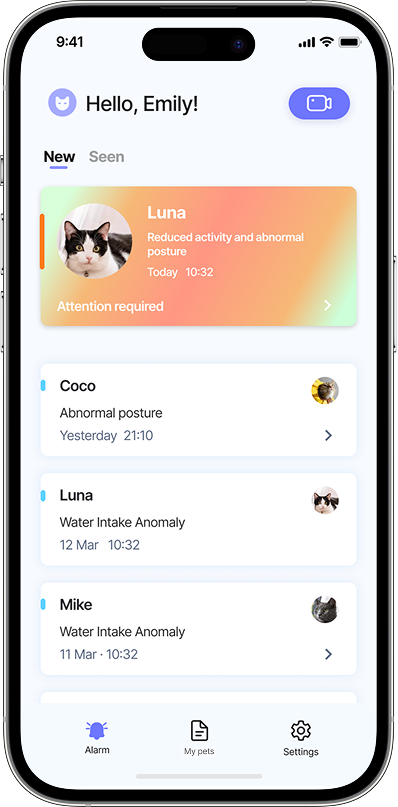

01🔎
Subtle symptoms slip through
Early signs are often overlooked because monitoring relies on subjective, intermittent observation.
VitaPaw is an AI-powered system that monitors cats' health through behavior analysis. It helps caregivers detect early illness signs and make informed care decisions — turning continuous camera observation into clear, trustworthy health signals.
Nominated · UX Design Awards 2025 Recognized for its innovative approach to AI-driven preventive pet care — for both user experience and animal welfare. View on UX Design Awards →Beyond static screens, I vibe-coded a working prototype — a clickable browser build that simulates the alert feed, anomaly video playback, and health report.
Try the live demoCats hide illness well - early signs are subtle and behavioral, and caregivers rarely have time to watch continuously. VitaPaw uses vision-based behavior recognition to surface those early signals and turn them into care decisions.
In the Discover phase, research and insights were gathered through a combination of secondary research and interviews with veterinarians and multi-cat caregivers. This helped identify the key challenges in multi-cat health management and uncover opportunities for AI-assisted monitoring.

Primary users: cat caregivers & rescue environments. Secondary users: veterinarians.

Early signs are often overlooked because monitoring relies on subjective, intermittent observation.
High workload and limited staff make continuous monitoring difficult, especially in rescue centers.
Users need alerts that are transparent and trustworthy - not a black box they're asked to act on.
Concise, intuitive feedback is preferred over medical terminology or dense charts.
To ground the problem definition, I first reviewed existing pet-camera products and assessed the technical feasibility of vision-based behavior recognition - to understand both market gaps and realistic system constraints.
Existing pet cameras are primarily designed for entertainment or basic monitoring, offering limited support for individualized, health-oriented monitoring in multi-cat environments.
A high-level review of vision-based animal behavior recognition helped constrain the design focus to observable, behavior-driven indicators rather than speculative or clinically invasive signals.
I mapped the end-to-end journey of a busy caregiver - from onboarding a pet to taking medical action - to locate where reassurance breaks down and where the AI needs to earn trust.
A busy professional caring for a senior pet with chronic health risks. She wants to stay on top of subtle changes without spending her limited time deciphering data.
| 1 - Initialization (onboarding) |
2 - Routine monitoring |
3 - Anomaly alert |
4 - Deep analysis |
5 - Medical action |
|
|---|---|---|---|---|---|
| Actions | Inputs pet's species, age & health history | Occasionally checks the live feed; goes about the day | Receives a push notification for an immediate anomaly | Reviews the pet's health report | Exports a standardized health report for the vet |
| Thoughts | "Onboarding is a bit tedious, but worth it for accuracy." | "I don't need to worry - I feel reassured." | "Suddenly anxious - why exactly did it alert?" | "The charts are messy. Just tell me how serious it is." | "I hope this data helps the vet diagnose accurately." |
| Emotions | 🧐 | 😌 | 😟 | 😕 | ✅ |
| Frustrations | Tedious entry: doesn't want to fill in too much manually. | Invisible AI: can't see it working, doubts it's effective. | False alarms: cats playing can trigger over-panic. | Chart overload: too dense to read the trend. | Hard to convey: can't describe subtle anomalies to the vet. |
| Opportunities | Guided entry: auto-suggest common risks by breed. | One-click live feed on the home screen for peace of mind. | 10s clip: direct link to a snippet of the specific anomaly. | Severity levels: show which alert matters most at a glance. | Export a standardized health report. |
The IA prioritizes clear health signals and efficient navigation, supporting fast awareness without unnecessary cognitive load. Three top-level areas keep alerts, pets, and setup distinct but reachable.
Based on expert interviews and literature, we identified four types of health indicators and grouped them by urgency to guide alert timing, prioritization, and trend-based monitoring design.
Immediate indicators trigger instant notifications and are included in health reports.
Trend-based indicators are shown in health reports and only trigger notifications when sustained changes are detected.
The prototype turns the indicator strategy into a calm, scannable interface - surfacing the single most urgent signal first, then giving caregivers the context to decide what to do next.



Early usability testing focused on improving clarity, navigation flow, and information hierarchy. We simplified the homepage, reduced visual noise, refined error feedback, and improved feature discoverability. The final iteration shifted focus from surface-level refinement to rethinking the alert decision model.


By grounding the design in observable behaviour, grouping indicators by urgency, and rebuilding the alert model around a single acknowledge action, VitaPaw turns always-on camera monitoring into a small number of clear, trustworthy signals - so a time-poor caregiver can tell, at a glance, whether today needs their attention.